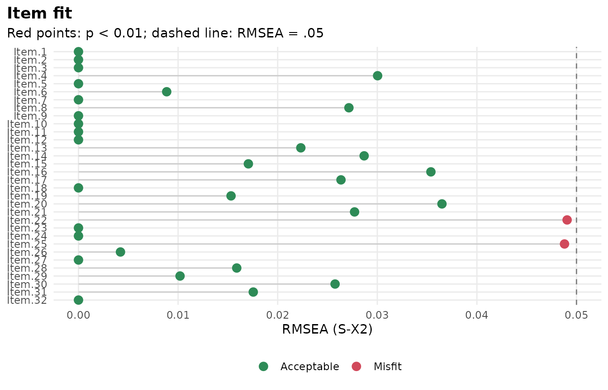
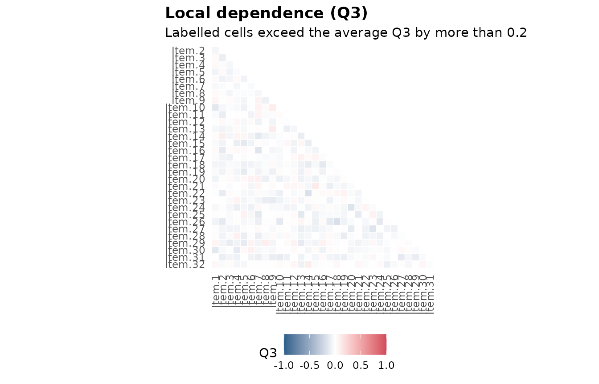
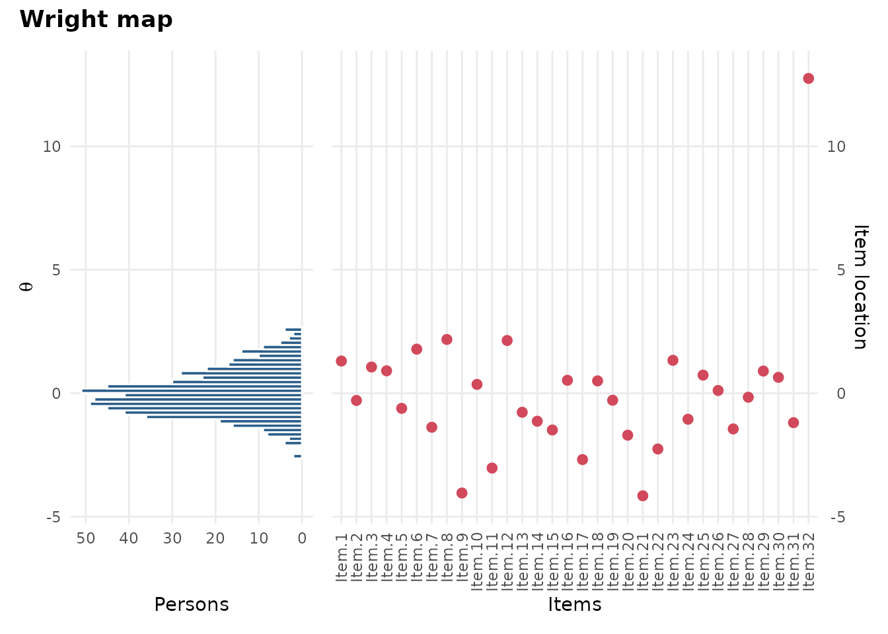
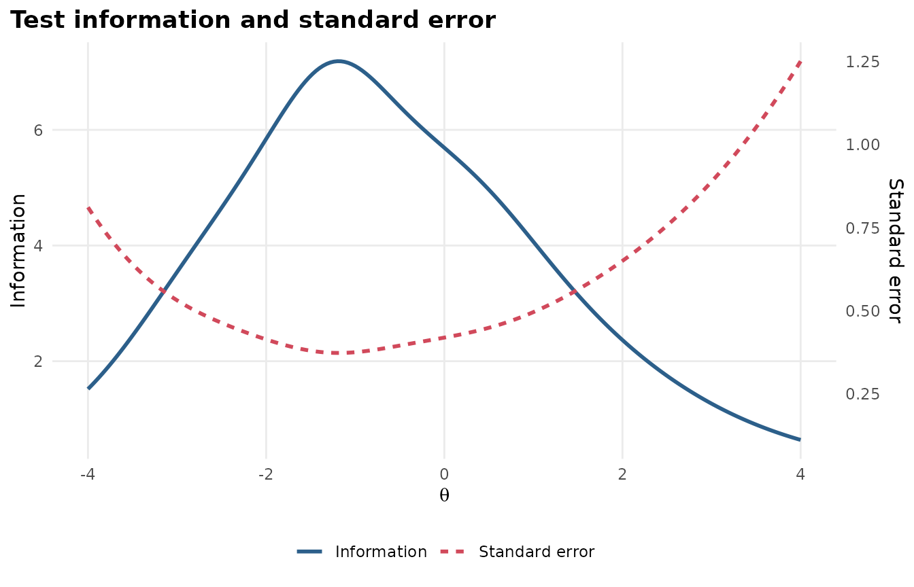

Thesis kit: From item responses to a Methods section
Source:vignettes/articles/thesis-kit.Rmd
thesis-kit.RmdA thesis committee wants three things from an IRT analysis: That the model was chosen for a reason, that it was checked, and that the write-up says exactly what was done. This kit walks through all three with one dataset, and ends with a Methods paragraph and reference list you can paste into your thesis and then edit.
The example uses SAT12, a 32-item science test taken by
600 students, which comes with mirt. Swap in your own data at step 1 and
run the rest as it is.
1. Describe the data
library(mirtverse)
key <- c(1,4,5,2,3,1,2,1,3,1,2,4,2,1,5,3,4,4,1,4,3,3,4,1,3,5,1,3,1,5,4,5)
data <- key2binary(SAT12, key) # score multiple-choice answers 0/1
dim(data)
#> [1] 600 32
head(itemstats(data)$itemstats) # classical item statistics
#> N K mean sd cor_if_rm smc alpha_if_rm
#> Item.1 600 2 0.283 0.451 0.300 0.158 0.793
#> Item.2 600 2 0.568 0.496 0.464 0.270 0.785
#> Item.3 600 2 0.280 0.449 0.371 0.184 0.789
#> Item.4 600 2 0.378 0.485 0.235 0.145 0.796
#> Item.5 600 2 0.620 0.486 0.340 0.197 0.791
#> Item.6 600 2 0.160 0.367 0.351 0.185 0.791Look for items that almost everyone gets right or wrong, and for
items with a low or negative item-total correlation: They are often
miskeyed. If you remove an item, write down why;
cite_methods() can report it (step 5).
2. Choose a model
select_model() fits the candidate models to the same
data, compares them, and explains its choice in plain language. Quote
that reasoning in your thesis rather than just the winner.
sel <- select_model(data, candidates = c("Rasch", "2PL"), verbose = FALSE)
sel
#> mirtverse model selection (ranked by BIC)
#>
#> model npar logLik AIC BIC SABIC RMSEA CFI delta weight
#> 2PL 64 -9488.955 19105.91 19387.31 19184.13 0.028 0.953 0.000 1
#> Rasch 33 -9643.469 19352.94 19498.04 19393.27 0.041 0.894 110.724 0
#>
#> The 2PL model is recommended because it has the lowest BIC (19387.3). The
#> runner-up, Rasch, is 110.7 BIC points worse, which is very strong evidence for
#> the 2PL model. Likelihood-ratio test Rasch vs. 2PL: chi-square(31) = 309.03, p
#> < .001; the 2PL model fits significantly better. Absolute fit of the 2PL model:
#> RMSEA = 0.028 (close fit), CFI = 0.953, SRMSR = 0.045.
mod <- sel$best3. Check the model
Three checks most committees ask about: Overall fit, item fit and local dependence.
glance(mod)[, c("M2", "df", "p.value", "RMSEA", "SRMSR", "CFI", "reliability")]
#> # A tibble: 1 × 7
#> M2 df p.value RMSEA SRMSR CFI reliability
#> <dbl> <int> <dbl> <dbl> <dbl> <dbl> <dbl>
#> 1 684. 464 1.15e-10 0.0281 0.0452 0.953 0.836
gg_itemfit(mod)
gg_q3(mod)
interpret(mod) writes a plain-language summary of these
results, which is a good check on your own reading of them.
4. Make the figures
Every plot is a ggplot2 object. Save figures at the size of your page, at 300 dpi, so the text in them matches the text around them.
p <- gg_wright(mod)
p
gg_info(mod)
ggplot2::ggsave("figure-1-wright-map.png", p, width = 6.5, height = 4.5, dpi = 300)For an item-by-item table in the results chapter,
item_table(mod) has the item statistics, fit and flags in
one data frame. Write it to a CSV file and paste it into Word as a
table:
write.csv(item_table(mod), "table-2-items.csv", row.names = FALSE)5. Write the Methods paragraph
cite_methods() drafts the software, model, estimation,
model choice, fit and reliability sentences, in APA style, with the
references they cite. Give it the select_model() result so
it describes the comparison too.
cite_methods(sel, sample = "high school students",
items = "multiple-choice science items")
#> Analyses were conducted in R (version 4.6.2; R Core Team, 2026) with
#> the mirt package (version 1.48; Chalmers, 2012) for item response
#> theory (IRT) and the mirtverse package (version 0.2.0; Bulut, 2026) for
#> model comparison, fit summaries and reporting.
#>
#> A unidimensional two-parameter logistic (2PL) model (Birnbaum, 1968)
#> was fitted to the responses of 600 high school students to 32
#> dichotomously scored multiple-choice science items, using marginal
#> maximum likelihood with the expectation-maximization (EM) algorithm
#> (Bock & Aitkin, 1981).
#>
#> To choose the model, the Rasch and 2PL models were compared on the
#> Bayesian information criterion (Schwarz, 1978); the 2PL model had the
#> lowest value (BIC = 19387.3, compared with 19498.0 for the Rasch).
#> Likelihood-ratio tests between nested models gave χ²(31) = 309.03, p <
#> .001 for the 2PL against the Rasch.
#>
#> Overall model fit was evaluated with the limited-information M2
#> statistic (Maydeu-Olivares & Joe, 2006): M2(464) = 683.96, p < .001,
#> RMSEA = .028, SRMSR = .045, CFI = .953. Item fit was examined with the
#> S-X² statistic (Orlando & Thissen, 2000); 2 of the 32 items (Item.22
#> and Item.25) showed misfit at α = .01. Marginal reliability was .84.
#>
#> References
#>
#> Birnbaum, A. (1968). Some latent trait models and their use in
#> inferring an examinee's ability. In F. M. Lord & M. R. Novick
#> (Eds.), *Statistical theories of mental test scores* (pp. 397–479).
#> Addison-Wesley.
#> Bock, R. D., & Aitkin, M. (1981). Marginal maximum likelihood
#> estimation of item parameters: Application of an EM algorithm.
#> *Psychometrika, 46*(4), 443–459. https://doi.org/10.1007/BF02293801
#> Bulut, O. (2026). *mirtverse: A friendly workflow and reporting layer
#> for 'mirt'* (Version 0.2.0) [R package]. Zenodo.
#> https://doi.org/10.5281/zenodo.23719384
#> Chalmers, R. P. (2012). mirt: A multidimensional item response theory
#> package for the R environment. *Journal of Statistical Software,
#> 48*(6), 1–29. https://doi.org/10.18637/jss.v048.i06
#> Maydeu-Olivares, A., & Joe, H. (2006). Limited information
#> goodness-of-fit testing in multidimensional contingency tables.
#> *Psychometrika, 71*(4), 713–732.
#> https://doi.org/10.1007/s11336-005-1295-9
#> Orlando, M., & Thissen, D. (2000). Likelihood-based item-fit indices
#> for dichotomous item response theory models. *Applied Psychological
#> Measurement, 24*(1), 50–64.
#> https://doi.org/10.1177/01466216000241003
#> R Core Team. (2026). *R: A language and environment for statistical
#> computing*. R Foundation for Statistical Computing.
#> https://www.R-project.org/
#> Schwarz, G. (1978). Estimating the dimension of a model. *The Annals of
#> Statistics, 6*(2), 461–464. https://doi.org/10.1214/aos/1176344136
#>
#> Check the text against your analysis before you use it.To get a Word file with the paragraph and the references:
cite_methods(sel, sample = "high school students",
items = "multiple-choice science items",
file = "methods.docx")Treat the text as a first draft. Read it against your analysis, add what only you know (how the data were collected, ethics approval, why the test was given), and rewrite it in your own voice. Your committee will read it as yours.
6. Keep an appendix
One HTML file holds the whole analysis: Model comparison, parameters, fit, figures and item health cards.
mv_report(sel, file = "appendix-irt-analysis.html")Save your R script next to it. If someone asks how a number was produced, the script answers.
Where to go next
- The book explains each step in more depth: See the chapters on estimation and comparing models, fit and reporting.
- Differential item functioning if your thesis compares groups.
- Gallery for every figure type.